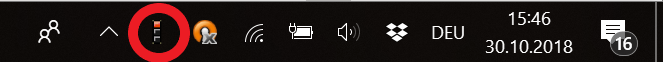
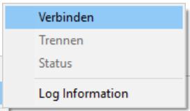
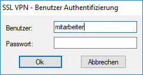

Anleitung VPN-Verbindung
Lade den VPN-Client herunter: Mitarbeiter VPN Client
Für Mac lade die VPN-Konfig herunter: Mitarbeiter VPN Konfig
Wenn der Download abgeschlossen ist, führe die Installationsdatei aus.
Nun errscheint in der Taskleiste ein Ampelsymbol welches auf rot steht.
Öffne das Kontext-Menü mit einerm Rechtsklick auf das Aampelsymbol und wähle Verbinden.
Nun erscheint ein Login-Fenster. Gebe die dir zur Verfügung gestellten allgemienen VPN-Angaben ein. Bestätige mit OK.
Die Ampel wechselt nach ein paar Sekunen auf Grün.